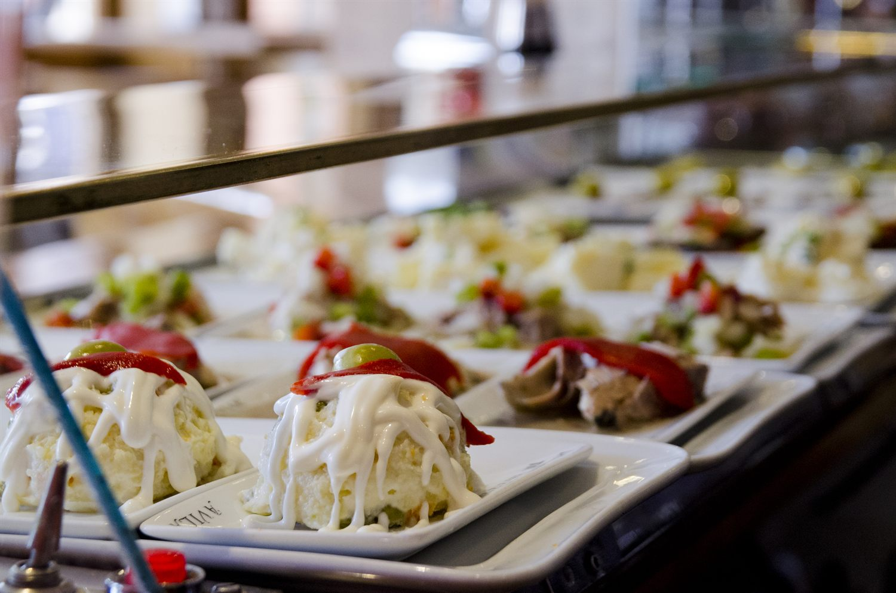
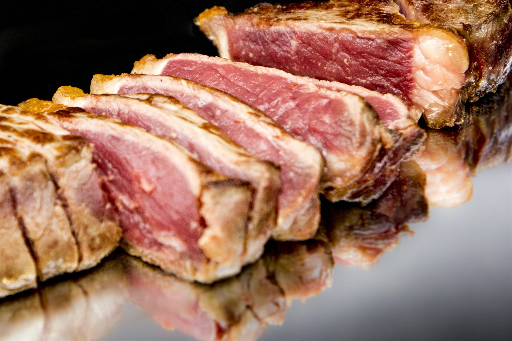
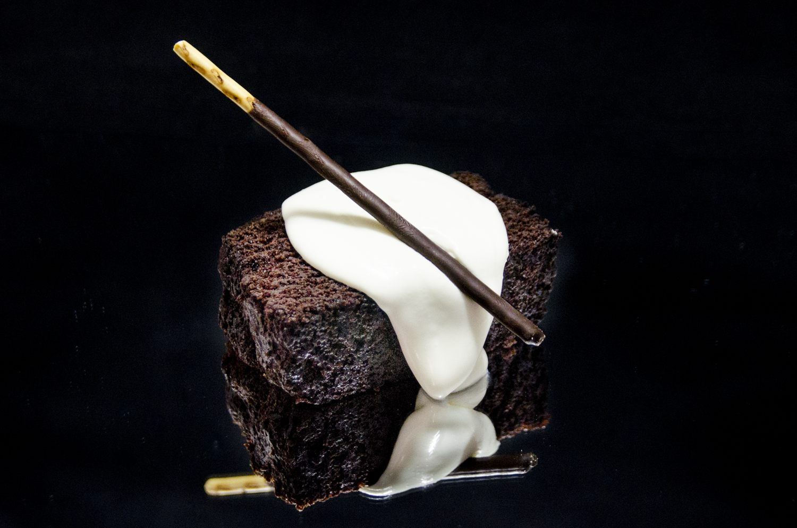
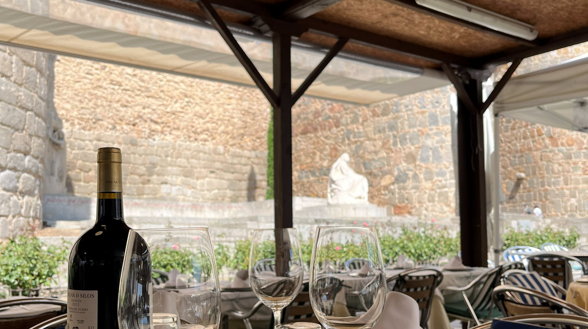
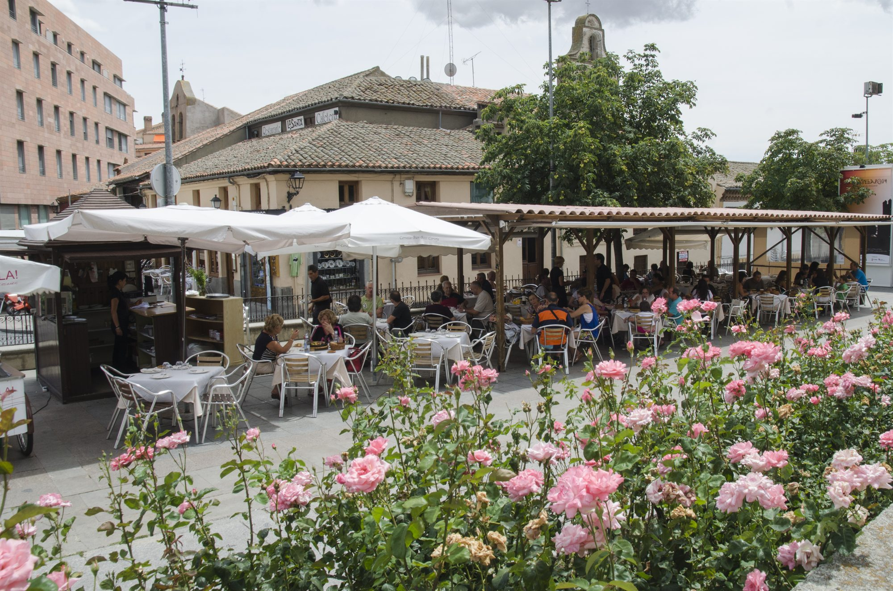

01
Pinchos de la barra
Ensaladilla cremosa rematada con piquillo y una tanda de bocados fríos y templados que renovamos cada día. El picoteo castellano de siempre, para abrir boca de pie y sin prisa.

Cerrado por vacacionesVolvemos el viernes 20 de noviembre
La Santa
Chuletón de Ávila, cuchara de siempre y vinos de la tierra, en pleno corazón amurallado.
Nuestra Historia
Hay comidas que se recuerdan por el plato y otras por el lugar. En La Santa, a los pies de la muralla de Ávila, ocurren las dos cosas a la vez.
Trabajamos el producto de la tierra con el respeto de siempre: el chuletón de Ávila, las judías de El Barco cocidas sin prisa, las verduras de temporada y una bodega escogida con calma.
Dentro, el comedor guarda el encanto de lo clásico; fuera, la terraza mira a la muralla. Solo queremos que te sientes, te quedes y disfrutes de la mesa sin reloj.
La casa recomienda
Tres bocados que resumen nuestra cocina, de la barra a la sobremesa.
Ensaladilla cremosa rematada con piquillo y una tanda de bocados fríos y templados que renovamos cada día. El picoteo castellano de siempre, para abrir boca de pie y sin prisa.

El corte con más sabor: entrecot de vacuno de Ávila, dorado por fuera y jugoso por dentro. Cortado grueso y servido al instante para que hable el producto.

El final que pide la sobremesa: bizcocho de chocolate denso y húmedo, nata montada al momento y un lápiz de chocolate crujiente. Poco artificio y mucho sabor.


“Comer bien, sin prisa, con las vistas que solo Ávila sabe dar.”
Opiniones
Esto es lo que cuentan quienes ya han comido con nosotros en Google.
Si quieres comer un buen chuletón en Ávila, te recomiendo este restaurante. Tiene vistas a las murallas y un ambiente acogedor. La ración es muy generosa; creo que hasta tres personas podrían compartirla sin problema. La carne de Ávila tiene un sabor exquisito. Sin duda, ya sé adónde iré de nuevo cuando vuelva. El servicio fue excelente, un 10 sobre 10.
¡La comida es fantástica! Pedimos judías de El Barco de Ávila, revuelto de morcilla y patatas revolconas con torreznos. Nuestra camarera era una mujer muy amable, y me encantó lo atenta que fue con nosotros.
Nos recibieron con mucha amabilidad y nos atendieron de maravilla. La comida estaba buenísima, el vino también y el ambiente era muy agradable. Sin duda volveremos cuando estemos por la zona. Además, las vistas desde la terraza son estupendas.
¿Has comido con nosotros? Cuéntaselo a todo el mundo.
Dejar una reseña en Google
Reserva tu mesa
Te guardamos la mejor mesa en la terraza.
Visítanos